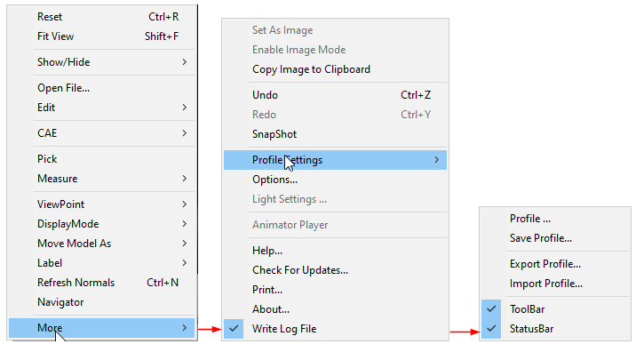
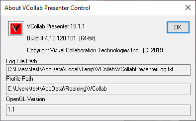
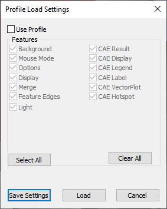
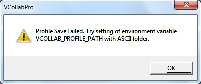
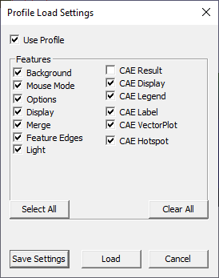
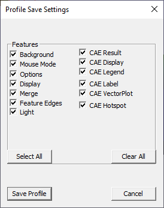
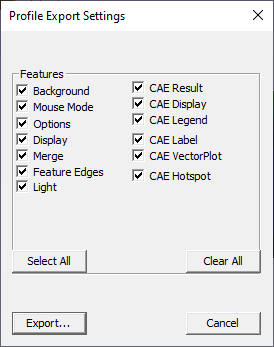
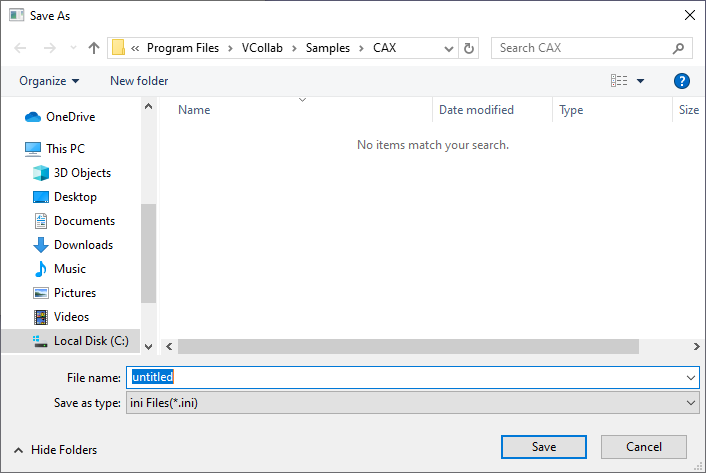
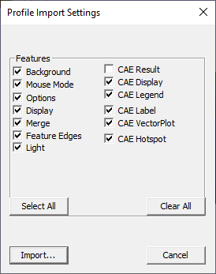

Profile Settings
Using the Profile Settings option, users can set, export and import current configurations. They can also store and retrieve specific features.

The various options available under Profile Settings sub menu are explained below
| Profile | Opens the Profile Load Settings’ dialog and is used to select features to be applied while loading. through the . |
| Save Profile | Opens the Profile Save Settings dialog and is used to save settings into a profile. |
| Export Profile | Saves and exports current configuration into a profile file. This file can later be imported into some other session or computer. |
| Import Profile | Imports and loads a profile from an external profile file. |
| Toolbar | Shows/Hides toolbar |
| Status bar | Shows /Hides application status bar. |
Profile files location
Profile path will be displayed in More | About…| VCollab Control dialog for user convenience.

Profile Features

| Feature | Fields Profiled | Feature | Fields Profiled |
| Background | Background Mode, Background, Colors Background Texture Path, Background Texture Mode |
CAE Result | Result Name Instance Name Derived Type Name |
| Mouse Mode | Mouse Click Mouse Double Click Mouse Shift + Click Mouse Ctrl + Click Mouse Shift + Ctrl + Clicks |
CAE Display | Color Plot Legend Deform Mesh Undeformed Mesh Min and Max Contour Lines |
| Options | Animate Zoom PPT Auto PPT Origin PPT Size Use Plain Background In PPT Probe On MouseMove Start On CAE Animation Control Launch Update Normal On Animation |
CAE Legend | Reverse Legend Scientific Precession Discrete Legend Colors No Result Color Display of Frame Info Legend Placement Contour Line User Color Contour Line Mode |
| Display | Origin Show Origin Percentage Move Model As Mode Detail Cull Percentage Line Thickness Perspective Mode Coordinate System Axis Statistics Navigator View Point GUI Geometry Line Size Geometry Point Size |
CAE Label | Auto Arrange Labels Arrange Label Mode Label Font Name Label Background Color Label Text Color Label Border Color Label Background Label Border Label Font Size Label Size Label Line Color Label Line Width Keep Previous Probe Auto Update Label Info ID Display |
| Merge | Merge Position Apply Current Settings Merge Custom Translation Merge Custom Rotation Merge Custom Scale Show Data Set Labels Combined Palette Multi Palette Hide Other Dataset |
CAE Vector Plot | Vector Plot Arrow Size Vector Plot Arrow Style Vector Plot Deform Vector Plot Detach Geometry Vector Plot User Color Mode Vector Plot User Vector Colors Vector Plot Node Position As Vector Direction Vector Plot Auto Scale Vector Plot Scale Factor |
| Feature Edges | Show Feature Edges Detach Geometry and Edges Feature Edge Color Feature Edge Size |
CAE Hotspot | Hotspots Count Visible Surface Keep Previous Label Hotspot Zones Top & Bottom hotspots Border Colors Mark Min Max Probe Type Template Hotspot Viewpoints All Std. Views Hotspot Viewpoints Hotspot Per Page Hotspot Viewpoints Part Regions Hotspot Compare Hotspot Compare Mode Hotspot Show All Connections Hotspot Compare With Hotspot All Model Reference |
| Light | Switch On/Off flags Light Intensity Relative to Camera flags Direction |
Viewpoints Vs Profile Settings
Some profile settings are saved in application session profile as well as in CAX file as viewpoints. In that case, viewpoint settings are preferred to profile settings.
Steps to Save Profile Settings in Viewpoints
- Load a CAX file in VCollab Pro.
- Create a viewpoint with Vector Plot OFF.
- Switch ON the Vector Plot.
- Enable profile option using Edit | Profile Settings | Profile.
- Close the application.
- Now Vector Plot - OFF - is stored in the CAX file as a viewpoint.
- Vector plot - ON is stored in Application Profile settings.
- Open VCollab Pro again.
- Load the saved CAX file.
- Pro loads the CAX file with the user defined viewpoint.
- Even though vector plot is ON in profile settings, vector plot is OFF because of user defined viewpoint.
If the user profile directory is of Unicode characters, profile settings cannot be saved. This can be avoided by setting environment variable VCOLLAB_PROFILE_PATH with ascii character path.
Warning message pops up if the path is of Unicode characters as shown below.

Steps to set and revoke session profiles
- Click Edit | Profile Settings | Profile to open Profile Load Settings panel

- Check and uncheck the required options.
- Click OK.
- Click Edit | Profile Settings | Save Profile to open Profile Save Settings dialog.

- Select the options as required.
- Click Save to save the settings.
- As per profile load settings, the model will be loaded.
- Click Edit | Profile Settings | Apply Profile to retrieve saved profile settings.
Steps to export and import profile settings files
- Click Edit | Profile Settings | Export Profile to openProfile Export Settings dialog.

Select the features and click Export.
A file browser dialog opens.

Select the file type either as .ini or .json.
To import, click Export | Profile Settings | Import Profile to open Profile Import Settings dialog.

- Select the features as required.
- Click Import.
- Select the profile file using the file browser button.
- Settings from imported file are applied.